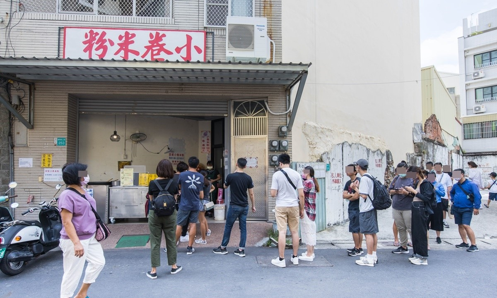
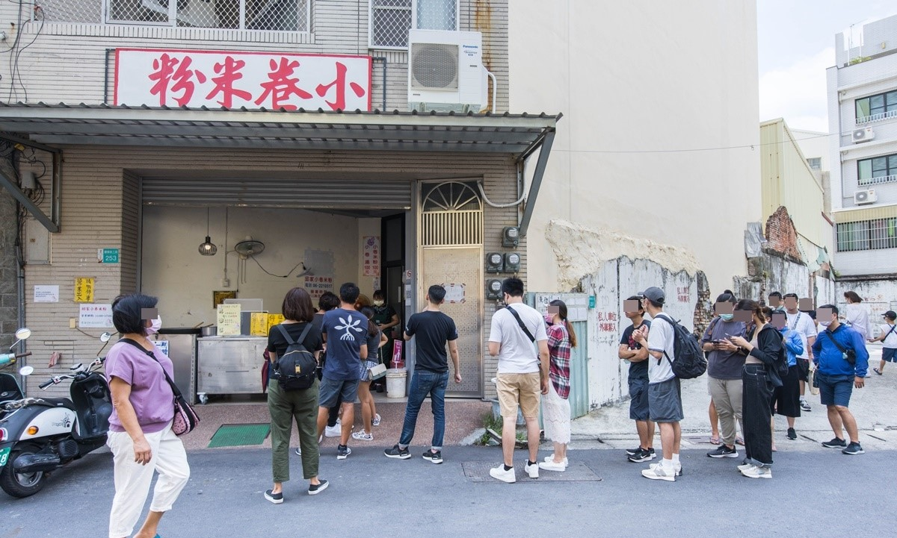

| 台南冰店 |
在地人從小吃到大，一碗只要銅板價$40，這裡的配料多樣，全部配料有仙草、杏仁、湯圓、芋頭、紅豆、綠豆、愛玉...等等，老顧客都點"全加"，這樣子的吃法口感比較豐富，糖水清香清香的，整體微甜吃完不會膩，解渴又清涼，圓仔很好吃~


| 店家名稱：長和路圓仔冰
地址：台南市安南區長和路三段3號 電話：06-3561123 營業時間：10:00–18:00 必吃招牌:綜合 |
說到台南人關於飲食的集體記憶，「江水號」肯定是常掛在嘴上嚷嚷、三不五時得來上一碗的日常。靠著每日手工熬煮的配料，「江水號」的八寶冰走過 90 個年頭，征服一代代嗜甜嗜美食的台南人，即使在凡事講求快速，味道求新求變的新世代，這一碗單純實在、清甜不膩的透心涼，依然能在冰品爭霸戰中勝出，滿足年輕人挑剔的味蕾。


| 店家名稱：江水號
地址：台南市中西區國華街三段27號（臨時店面） 電話： 06-2258494 營業時間：12:00~20:00，不定期公休 必吃招牌:芋泥 |
這家店原本是在水仙宮市場附近小攤販，後來才搬到康樂市場，來這裡必吃的就是「隱藏版滿滿湯圓剉冰」， IG上只要有這家店的貼文，就一定會有這碗冰，紅白粉圓堆得滿滿滿，像座湯圓小山似的！湯圓口感軟Q，本身也帶有甜味，但要快點吃，不然一直冰著湯圓會變硬，再來湯圓的量真的很多，而且是堆上去的，一不小心湯圓就會滾下來，不過整體來說這碗50元，CP值挺高！

| 店家名稱：阿川古早味粉圓冰
地址：台南市中西區海安路一段康樂市場82號 電話：06-2239373 營業時間：10:30–22:00 必吃招牌:隱藏版湯圓冰 |
| 台南牛肉湯 |
切成薄片的粉嫩嫩牛肉片用滾沸高湯往碗裡沖下，瞬間熟成的好味道，不用沾醬就很美味，在麻豆其森牛肉湯，只要低消120元就可以肉燥飯+滷蛋免費無限吃到飽，太佛心了! 但要注意的是營業時間都是從早上五點到下午兩點售完為止。

| 店家名稱：其森牛肉湯
地址：台南市麻豆區興民街1號 電話：06-5717112 營業時間：05：00-14：00 必吃招牌:牛肉湯搭配肉燥飯和滷蛋吃到飽 |
位在台南佳里的順福土產牛肉湯，雖然離台南市區有一小段路，但為了美食，一切都值得，順福土產牛肉湯用餐環境乾淨，溫體牛凌晨直送，肉品優秀湯又清甜，老饕們讚不絕口，老闆相當客氣，不忙的時候也很健談，看得出老闆對於湯頭的堅持跟肉品的用心！

| 店家名稱：其森牛肉湯
地址：台南市佳里區延平路324號 電話：06-7212845 營業時間：02：30-17：00 必吃招牌:牛肉湯+肉燥飯搭配滑蛋牛肉 |
整體來說阿財牛肉湯在牛肉口感和湯頭方面都還不錯，在地人推薦的五花肉牛肉湯真的可以喝喝看，應該會比一般的牛肉湯要來的好喝一些。但如果不喜歡帶筋或帶肥肉的人，可以點一般的牛肉湯就好，一樣不錯喝。大推阿財牛肉湯的沾醬，目前吃過台南牛肉湯有附沾醬裡面最好吃的!

| 店家名稱：阿財牛肉湯
地址：台南市安平區古堡街5號 電話：06-2261252 營業時間：11:30–22:00 必吃招牌:菜單上沒有的”五花肉牛肉湯” |
| 台南碗粿 |
在地經營40多年的阿蘭碗粿，碗粿裡面混雜著油蔥、滷蛋、香菇、肉塊、蝦米等多種配料，柔軟綿密的口感，配上特製醬料後，讓整體更多層次，老一輩的都用台語叫碗粿蘭，聽起來特別親切，下國道一號麻豆交流道馬上就到了，是出遊肚子餓的好朋友，外帶回家放冰箱，只要用電鍋蒸一下，跟現場一樣好吃。

| 店家名稱：阿蘭碗粿
地址：台南市麻豆區中山路179-8號 電話：06-5724035 營業時間：06:30~18:00 必吃招牌:碗粿、魚羹湯 |
富盛號創立於民國36三店傳承台南台灣米食文化，使用高品種台灣再來米 溫體豬後腿肉，天然火燒蝦仁，自製老滷肉臊再與獨家醬汁搭配淋上蒜泥，自然健康的台灣米食料理。魚羹湯則是以大骨鮮菜等食材熬製而成的湯底再將旗魚肉漿製成一顆顆大小適中的魚丸煮熟後勾芡，搭配香菜,黑醋,胡椒調味自然鮮甜的湯頭與新鮮魚羹非常爽口。


| 店家名稱：富盛號碗粿
地址：台南市中西區西門路二段333巷8號 電話：06-2274101 營業時間：7:00~17:30 (週四公休) 必吃招牌:碗粿、魚羹 |
地點就位於永樂市場側邊國華街上，是在地人極力推薦的碗粿店！許多內行人來到國華街，都會指名吃一味品碗粿，傳承自老一代的好手藝，讓碗粿保有台南傳統老味道。一味品碗粿賣的商品很單純，只賣碗粿及魚羹２樣，專注於２樣料理上，讓人感受到對於食材的用心及堅持。台南專屬的深咖啡色調碗粿，在碗粿內放入火燒蝦、豬肉塊、肉末等，我們喜歡再淋上蒜末及少許辣椒醬，繽紛的色澤光看就充滿了期待感。吃法就是繞著碗粿畫１圈再十字對剖，然後豪氣的將碗粿整塊送入嘴巴，那Q彈的口感及碗粿的香氣，再融入餡料真的太好吃了！

| 店家名稱：一味品碗粿
地址：台南市中西區國華街三段177號 電話：06-2288563 營業時間：05:00 ~ 17:00(周二公休) 必吃招牌:碗粿、魚羹 |
| 私心推薦 |
愛吃小卷米粉饕客，必吃台南國華街美食小吃，這間也絕對是口袋名單，邱家小卷米粉位於台南市中西區國華街三段美食，原先在水仙宮市場(永樂市場)內，2022年3月國華街小卷米粉搬家，空間更寬敞了，滿滿排隊人潮，想吃就是乖乖排隊，必吃招牌小卷米粉110元，小卷厚實Q彈，湯頭鮮甜，粗米粉口感，好吃涮嘴，台南美食必吃！
 
| 店家名稱：邱家小卷米粉
地址：台南市中西區國華街三段253號 電話：06-2210517 營業時間：11:00–17:00 (週三公休) 必吃招牌:小卷米粉 |
主打現撈、現煮、無汙染的新鮮海味，由於七股潟湖周遭沒有工業區，連一般工廠都沒有，無污染可掛保證，牡蠣是自家養殖，海產漁獲也是自架定置網取得，現撈、現煮好滋味，東西平價、新鮮好吃，上菜速度也滿快的。


| 店家名稱：三不等海味餐廳
地址：台南市七股區七股村2-1號 電話：06-7871224 營業時間：10:00-19:00(週二公休) 必吃招牌:麻油蚵仔麵線、烤蚵仔 |
| ☝️top |